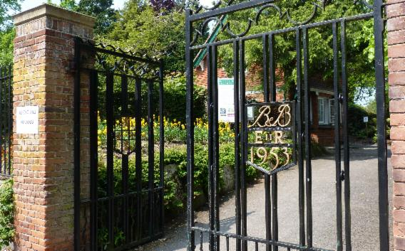
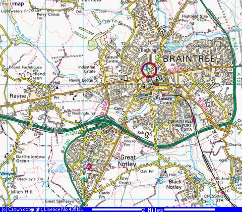

Contact Us
Don't be shy! Email us your thoughts on the Gardens and this website.
To book a tennis court, call 07768 188047 or drop in to the cafe.
To join The Friends of the Public Gardens, email Eve Boatman or call 01376 321147
Find us at 43 Bocking End, Braintree, CM7 9AE

Easy to find, in the centre of Braintree with street and private parking nearby.
For sponsorship opportunities, please email BBPGInfo@braintreeandbockingpublicgardens.com, expressing your interest and with your own personal / company contact details.
The Public Gardens Trust Contact Details:
Clerk to the Trustees: Linda Bardell Telephone: 01376 320173